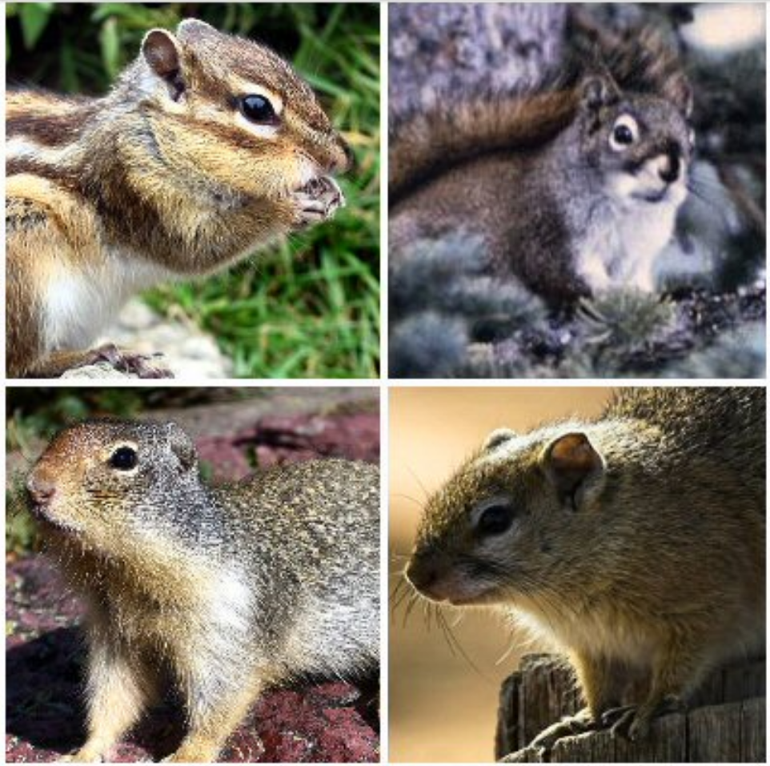
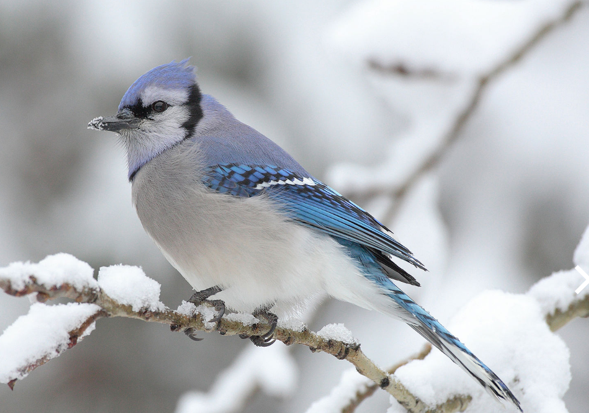
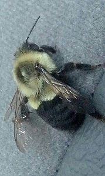

Backyard Wildlife
My Boyfriend's quasi-pets
My boyfriend thinks dogs and cats are too much responsibility, but he sure takes good care of the wildlife in his backyard.
He's always talking about:

- the squirrels, at least 4 of them, including:
- the fat king of the roost
- the fat rival
- the little one
- the blue jays

Favorite Foods
The wildlife, especially the squirrels, have my boyfriend well-trained to feed them. Whenever the dish is empty they will stare in the windows until he refills it. After careful observation, he has learned the squirrels favorite foods:
- salted peanuts...they lick the salt off before burying the peanuts.
- sunflower seeds...eaten immediately, but only if the peanuts have run out.
- other trail mix items like corn, but these are frequently left for the birds.
- fresh fruit...only in times of desperation and under cover of darkness...possibly by a yet to be discovered type of backyard pet.

The wildlife that finds its way into my truck isn't nearly as cute as the wildlife in my boyfriend's backyard.